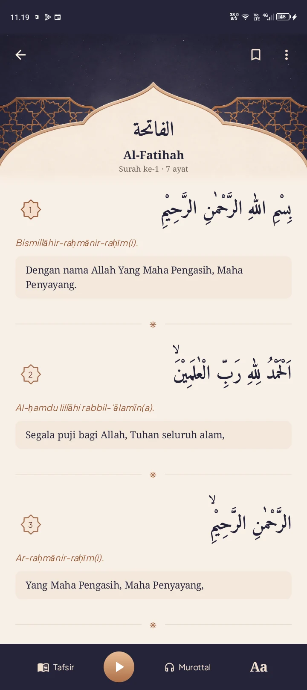
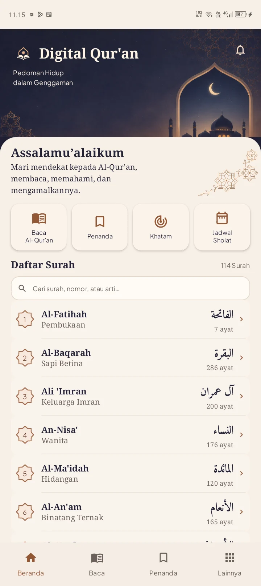

Baca dan pahami
Teks Arab, latin, dan terjemahan Indonesia. Buka tafsir Kemenag dan temukan ayat lewat pencarian.
Digital Qur’an untuk Android
Baca, pahami, dan dengarkan Al-Qur’an. Temukan ruang untuk kembali, di sela kesibukan setiap hari.
Tanpa akun. Tanpa iklan. Dengan ruang untuk merenung.


Lebih dekat, setiap hari
Dari ayat pertama yang kamu baca, sampai doa kecil sebelum menutup hari.
Teks Arab, latin, dan terjemahan Indonesia. Buka tafsir Kemenag dan temukan ayat lewat pencarian.
Ikuti lantunan ayat dan kelola audio unduhan untuk didengarkan kembali dari perangkatmu.
Simpan penanda ayat, kembali ke posisi baca terakhir, dan pantau progres khatam sesuai target.
Lihat jadwal Sholat dan Imsak. Pilih wilayah secara manual atau gunakan lokasi saat dibutuhkan.
Kalender offline dengan hari besar Islam, pasaran, weton, dan penanggalan Jawa Asapon.
Temukan bacaan harian melalui pencarian dan kategori. Baca offline setelah konten berhasil dimuat.
Beri waktu untuk satu ayat lagi
Sesuaikan pengalaman membaca dengan kebutuhanmu, lalu lanjutkan dari tempat terakhir kamu berhenti.
بِسْمِ اللّٰهِ الرَّحْمٰنِ الرَّحِيْمِ
Dengan nama Allah Yang Maha Pengasih, Maha Penyayang.
QS. Al-Fatihah 1:1
Sebelum mulai
Informasi singkat tentang bacaan, koneksi, dan data di perangkatmu.
Buka pusat bantuanTidak. Kamu bisa membuka dan menggunakan Digital Qur’an tanpa mendaftar atau login. Aplikasi juga tidak menampilkan iklan.
Pembaca Al-Qur’an menggunakan data lokal. Kalender Hijriyah dapat dibuka offline. Doa dapat dibaca setelah berhasil dimuat, dan audio yang sudah diunduh dapat diputar dari perangkat. Pencarian daring, tafsir, pembaruan jadwal, serta pengunduhan konten memerlukan internet.
Tidak. Kamu dapat memilih wilayah secara manual. Lokasi digunakan ketika kamu meminta pencarian wilayah atau kiblat. Tidak ada permintaan izin lokasi latar belakang.
Sumber konten mencakup Kemenag melalui layanan Al-Qur’an, EQuran.id untuk jadwal Sholat dan doa, serta penyedia audio murottal. Digital Qur’an merupakan aplikasi independen, bukan aplikasi resmi pemerintah.
Kalender Hijriyah memakai perhitungan Umm al-Qura; awal Ramadan dan hari raya mengikuti penetapan setempat. Tanggal Jawa menggunakan Asapon untuk periode 1936–2052. Ketepatan kompas kiblat bergantung pada sensor dan kalibrasi perangkat.
Penanda, posisi baca, dan pengaturan disimpan di perangkat. Layanan konten dapat menerima parameter permintaan dan informasi jaringan. Baca kebijakan privasi dan panduan pengelolaan data untuk detailnya.
Perjalanan berikutnya
Digital Qur’an sedang dipersiapkan untuk rilis. Tautan unduhan resmi akan tersedia di halaman ini setelah aplikasi dipublikasikan.